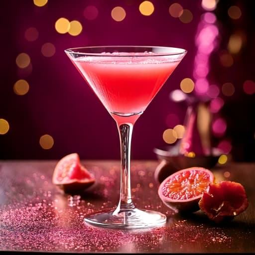

Pink Passion Martini
En festlig og eksotisk cocktail, der smager af tropisk luksus! Den bløde vaniljevodka møder frisk passionsfrugt og en let syrlig lime, mens den flotte gylden-pink farve skriger glamour. Perfekt til en aften, hvor der skal skåles i stil!
Ingredienser
- 4 cl vaniljevodka
- 2 cl passionsfrugt eller ananas juice
- 2 cl tranebærjuice (for den flotte pinke farve)
- 1 cl limejuice
- 1 cl passionsfrugtlikør (fx Passoã)
- Isterninger
Garnish
- ½ frisk passionsfrugt

Fremgangsmåde
- Fyld en shaker med is, tilsæt alle ingredienser og ryst godt.
- Sigt drinken i et martini- eller coupeglas.
- Pynt med en halv passionsfrugt på toppen
- Skål og nyd en cocktail, der smager lige så godt, som den ser ud!